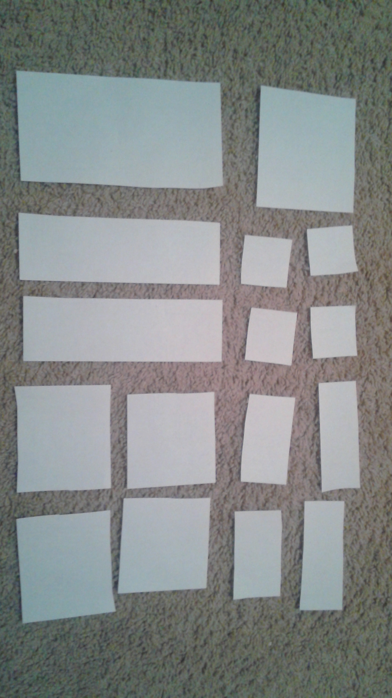

Sunset

Seahawks

Hikes

Universe


The Wii U is a gaming console that uses both digital and physical technology very well. Utilizing motion, touchscreen, and camera technology, the Wii U's gamepad is one of the most versatile gaming controllers on the market. It is used by gamers of all ages, with the primary audience being teenagers. Games are the digital content, with downloadable and disk games available. Physicallity exists in the controllers, allowing players to play the game with more physicality than just a thumbstick.

3D touch is a very physical aspect of the brand new iPhone. Now the touch screen is more than just tapping. How hard you press on the phone's touchscreen will change how the phone reacts. This adds more of a physical way to interact with all the digital aspects of the phone. Various applications are the digital part of the phone, but the physical part belongs to the 3D touch.
Seattle has recently implemented new crosswalk systems in the more populated areas of the city. The digital aspect of the crosswalk has stayed the same, with an algorithim determining when the crosswalk is available. However, the button has changed to have more physical feedback. Sound and vibrating feedback occurs when the user pushes the button, allowing the user to know when their input is received. This creates a very necesarry physical feedback for people of all kinds.
Google Maps has a very in depth digital part of its application. It has various algorithims to compute traffic and time, as well as a very complex representation of the map. Our position is very physical, and helps keep google up to date. Moving down the street or even turning the phone will update the digital display.
Virtual reality in gaming is the next big thing, and it is attempting to bridge the gap between our physical world and the digital world of the games. The universe that the game takes place is the digital aspect. How the Oculus Rift takes the users movement and turns are the physical part of the device. Users now feel as if they are actually in the game world, a very perfect example of physical and digital designs.
Our team came up with the idea of making a physical practice PC. This practice PC would be purchased before buying PC or alongside one. With our practice PC, a user could attempt to put together a computer without risking breaking the actual expensive parts of the PC. Our immediate thought was cardboard, as it was easy to produce and very inexpensive. Ideally, the practice PC would be as cheap as possible, since most people would not want to spend too much money for such a simple product. The cardboard acheived this, but we didn't believe it actually acheived our goal. The material would be too flimsy and wouldn't replicate the actual building process.
After our initial design we decided to look at our other options. Plastic, metal, and paper mache were our options. Aluminum would be the most realistic representation of actual computer parts, but would be the most expensive and difficult to produce. Paper mache has very similar problems to cardboard and was we were very quick to write it off. Plastic was a perfect middle ground between cardboard and aluminum. This would be difficult to produce, but luckily Quinn and I work in Odegaard library. There are 3D printers and Quinn actually knew the person in charge of this, so we decided to go with 3D printed practice PC.
Participatory Design is a great way for users to get involved in the design of projects. When making videos for my friends, I would love to hear their feedback on what they wanted to see from the video. Before starting it would be cool to get an idea of how they wanted certain projects to be.For a wireframe, I think a simple physical method of participatory design would be useful. Since target audiences aren't always very computer savvy, using a physical method to do participatory design would yield the best results. My idea would involve cutting out a lot of rectangles with varying sizes and dimensions. We would have a checklist for the content that would be needed on the actual pages, and let the users structure the site on their own. This way we could get a different perspectives on how the layout should look from non-designers. Users could write on the pieces of paper if they wanted to get more specific with the design. With writing they could demonstrate different structures like bullet points, tables, graphs, and more.

Our biggest decision was what transition our team wanted to focus on for the group project. We had the PC part picker, political candidate picker, and a improved bus app. We were very split on the subject, but we were all fine with whatever route was chosen. After deliberation, we decided to let the class choose what they thought was most interesting. The class voted and decided that the PC part picker was the most interesting topic. I personally thought that the political canddate picker has the most utility, but I compromised.
Deciding how to implement a physical aspect to our group project was a difficult decision that our team had to make. Finding a physical way to help a user create a PC was difficult, but I came up with a practice PC that a user could have to build confidence. Choosing how to realistically implement this was very difficult. We could choose cardboard, paper mache, or plastic. After thinking about our resources we decided to learn how to 3D print and use that to create our physical model.
Deciding what our transition would be specifically was a decision our group had to make. Many groups went with a "transition into the digital age" approach with their project, but we felt like a smaller scale transition was more appropriate. Our group decided that our goal was to help individuals transition from being computer illiterate to actually knowing the best way to build a computer. We stuck with an individual level because we all went through that transition ourselves.
The design of Netflix is a huge part of it's success. It's website is visually attractive with it's dark background and simple images showing each show. The website scales well on smaller screens and the video player is efficient and extremely effective.
Simple is better and Reddit proves this. There just isn't much going on, but the design is very smooth. With the RES extension, all the images and posts can be opened on the front page. The comment section is very simple and makes it easy to keep track of what thread you are on.
Twitch theater mode is one of my favorite designs of a popular website. The theater mode keeps all the non-stream parts of the screen a darker color for easy viewing. It maximizes the screen size while keeping the chat on the side. It creates a large screen to view on, without going fullscreen. Being able to watch in windowed mode is great on it's own, and the overall color scheme is icing on the cake.
Gyazo is another example of simple being better. With gyazo, you open the program, drag over your desired area, and let go. This screen caps the highlighted area and sens the image directly to the gyazo server. The uploaded image opens automatically in the browser and the link is usable for anybody. It's a very efficient design, and the way the picture is layed out is great as well. You can click on the image to bring it to full size as well. Gyazo accomplishes all it's goals in a very simplistic way.
I thought this was a very good idea for showing how sketches connect to each other and could be very useful in the design process.
Actually viewing where a user is clicking and keeping track of this is better for quanitative data. Asking users questions is one thing, but having actualy numerical data is important.
Knowing your limitations and having an achievable plan is a big deal. Whether it being budget constraints, a time limit, or a resource limitation, being able to deal with it is huge.
Being able to ask the right questions and expand on what a user gives to you is a big part of the design process. I don't believe I've mastered it, but watching other people question the speakers in the class gave me good outside perspective of the practice.
Ideation is a huge part of designing a program moving forward. Knowing how to design a product is one thing, but having an application people actually want is huge. Brainstorming was my favorite thing to do with my group, and I think our ideas were some of the better in the class